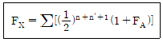
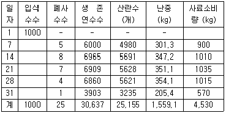
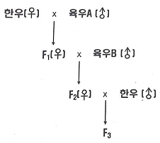
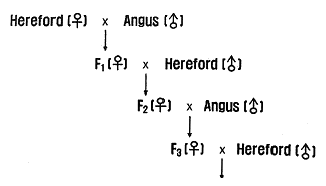
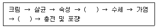

축산기사 (2021-03-07 기출문제)
1과목: 가축육종학
1. 돼지의 교배방법 중 육돈세대와 모돈세대의 잡종강 세를 최대한 이용할 수 있는 것으로 가장 적절한 것은?
- 퇴교배
- 상호역교배
- 열성잡종의 잉여
- 3품종 종료교잡법
(정답률: 81%)
2. 어떤 형질의 표현형분산 중에서 유전분산이 차지하는 비율을 의미하는 것은?
- 유전력
- 육종가
- 반복력
- 유전상관
(정답률: 63%)
3. 닭에 있어 횡반유전자(B)는 반성유전형질이므로 이를 이용하여 깃털색으로 자웅감별이 가능하도록 하려면 양 친의 유전자형을 어떤 식으로 하여야 하는가?
- ZBZB, ZbW
- ZBZb, ZbW
- ZBZb, ZBW
- ZbZb, ZBW
(정답률: 67%)
4. X의 근교계수를 계산하는 공식은 다음과 같다. 여기서 FA가 나타내는 것은?

- 공통선조의 근교계수
- X의 아비의 근교계수
- X의 어미의 근교계수
- X의 형매의 근교계수
(정답률: 81%)
5. 산란계 농장의 11월 검정성적이 다음 표와 같을 때 이 농장의 평균 난중은?

- 46.9g
- 53.9g
- 61.9g
- 65.1g
(정답률: 67%)
6. 안달루시안종 닭에 있어 흑색(B)종과 백색(b)종에서 얻은 F1은 모두 청색으로 나타났으며 F2에서는 흑색과 백색, 그리고 청색이 각각 1/4, 1/4, 1/2로 나타났다. 이러한 유전현상을 일컫는 말은?
- 완전우성
- 불완전우성
- 공동우성
- 복대립 유전자
(정답률: 83%)
7. 돼지의 스트레스감수성(PSS) 여부를 판정하는 방법으로 부적합한 것은?
- 모색 판정법
- DNA 분석법
- 혈청 중 CPK 활성 판정법
- 할로텐 검정법
(정답률: 75%)
8. 형질을 발현시키는데 있어서 유전과 환경간의 관계를 바르게 설명한 것은?
- 유전적으로 우수한 가축은 불량한 환경에도 영향을 받지 않는다.
- 아무리 환경조건이 좋다하더라도 그 개체가 태어날 때부터 가진 유전적 한계선은 초과하지 못한다.
- 개체의 유전적 한계선은 환경조건에 따라 변화될 수 있다.
- 개체의 능력은 유전과 무관하게 단지 환경의 영향으로 결정된다.
(정답률: 74%)
9. 다음 중 한우의 개량에 고려하여야 할 경제형질이라고 보기 어려운 것은?
- 번식능력
- 증체량
- 뿔의 모양
- 도체품질
(정답률: 90%)
10. 표현형 분산에 대한 설명으로 옳은 것은?
- 항상 양의 값(+값)을 취한다.
- 항상 음의 값(-값)을 취한다.
- 양의 값과 음의 값을 반반 취한다.
- 양의 값을 취하는 경우가 많다.
(정답률: 82%)
11. 다음 중 돼지 개량의 목표형질이 아닌 것은?
- 일당증체량
- 등지방두께
- 산자수
- 유지율
(정답률: 86%)
12. 검정종료된 종모돈(♂)을 선발하기 위한 선발지수식에 포함되는 형질이 아닌 것은?
- 일당증체량
- 사료요구율
- 등지방두께
- 산자수
(정답률: 68%)
13. 선조의 능력을 기준을 한 선발방법을 무엇이라 하는가?
- 개체선발
- 가계선발
- 혈통선발
- 가계내선발
(정답률: 83%)
14. 다음 그림과 같은 한우와 육우의 교배에서 얻어진 잡종 3대(F3)에서 한우의 유전자 비율은?

- 25%
- 50%
- 62.5%
- 75%
(정답률: 56%)
15. 선발의 효과로 옳은 것은?
- 새로운 유전자의 창출
- 새로운 유전자의 제거
- 우량 유전자 빈도의 증가
- 우량 유전자 빈도의 감소
(정답률: 84%)
16. 다음과 같은 방식의 잡종 교배방법은?

- 3원종료교배
- 3원종료윤환교배
- 3원윤환교배
- 상호역교배
(정답률: 59%)
17. 우리나라 산란계 개량의 목표대상형질이 아닌 것은?
- 난중
- 난각질
- 산란지수
- 사료요구율
(정답률: 68%)

18. 종축의 선발효과를 크게 하는 방법이 아닌 것은?
- 선발차를 크게 한다.
- 형질의 유전력을 높인다.
- 세대간격을 짧게 한다.
- 형질의 변이를 적게한다.
(정답률: 76%)
19. 한 가닥의 DNA 염기의 배열이 ATTGC일 때 이와 상보적인 DNA 염기배열은?
- GCCA
- UAACG
- TAACG
- TUUGC
(정답률: 86%)
20. 일반적으로 가축의 생산능력이 떨어지는 근친교배를 실시하는 이유로서 틀린 것은?
- 특정 유전자의 고정
- 불량한 열성 유전자의 제거
- 근친 계통간의 잡종 강세 이용
- 이형 접합체의 증가
(정답률: 72%)
2과목: 가축번식생리학
21. 가축의 발정주기로 옳은 것은?
- 소 : 27~30일
- 돼지 : 19~20일
- 산양 : 25~30일
- 말 : 30~35일
(정답률: 65%)
22. 다음 중 뇌하수체 후엽에서 분비되는 호르몬은?
- 옥시토신
- 프로게스테론
- 에스트로겐
- 난포자극호르몬(FSH)
(정답률: 87%)
23. 다음 중 난자생성과정에서 세포학적 염색체수가 2n인 단계는?
- 성숙난자
- 제2극체
- 제1난모세포
- 제2난모세포
(정답률: 57%)
24. 일반적으로 소의 난자가 배란된 후 수정능력을 유지할 수 있는 시간은?
- 6시간 이내
- 12~24시간
- 30~42시간
- 48~60시간
(정답률: 87%)
25. 가장 큰 부생식선으로 가장 많은 분비물을 배출하며 정액의 완충제로 작용하는 인산염과 탄산염이 분비되는 부위는?
- 정낭선
- 전립선
- 카우퍼선
- 정소상체
(정답률: 57%)
26. 소의 자궁은 어떤 형태로 분류되는가?
- 중복자궁
- 쌍각자궁
- 분열자궁
- 단자궁
(정답률: 67%)
27. 암퇘지의 성성숙이 완료되는 시기는?
- 약 생후 5주
- 약 생후 15주
- 약 생후 30주
- 약 생후 60주
(정답률: 59%)
28. 성숙한 포유가축에서 정자형성이 가장 활발히 일어나는 최적온도는?(오류 신고가 접수된 문제입니다. 반드시 정답과 해설을 확인하시기 바랍니다.)
- 25℃ 이하
- 26~29℃
- 30~35℃
- 36~39℃
(정답률: 59%)
29. 다음 중 스테로이드 호르몬이 아닌 것은?
- 난포호르몬
- 웅성호르몬
- 황체호르몬
- 프로스타글란딘
(정답률: 72%)
30. 소의 배란이 일어나는 시기로 가장 적합한 것은?
- 발정 종료 즉시
- 발정 종료 전 3~6시간
- 발정 종료 전 8~10시간
- 발정 종료 후 10~11시간
(정답률: 71%)
31. 태반에서 분비되는 호르몬은?
- 테스토스테론
- 황체형성호르몬(LH)
- 갑상선자극호르몬 방출호르몬(TRH)
- 임마혈청성 성선자극호르몬(PMSG)
(정답률: 69%)
32. 암가축의 발정과 관련된 설명으로 틀린 것은?
- 번식적령기에 도달해야 발정이 개시된다.
- 발정주기는 발정전기, 발정기, 발정후기, 발정휴지기로 구분된다.
- 발정기에 생식기관은 에스트로겐 영향하에 놓이게 된다.
- 발정후기는 프로게스테론 영향 하에 놓이게 된다.
(정답률: 63%)
33. 소 수정란이식에 있어서 수태율에 직접적인 영향을 미치는 요인으로 적합하지 않은 것은?
- 수정란 이식부위
- 수란우 발정동기화 방법
- 수정란 이식 기술자
- 수정란 이식방법
(정답률: 67%)
34. 수가축의 생식세포 분화를 일으키는 직접적인 원인이 되는 호르몬은 테스토스테론과 어떤 호르몬인가?
- 인히빈
- 에스트로겐
- 난포자극호르몬(FSH)
- 황체형성호르몬 방출호르몬(LHRH)
(정답률: 55%)
35. 분비량이 증가하여 가축의 분만에 직접적으로 관여하는 호르몬을 바르게 짝지은 것은?
- 프로게스테론과 릴랙신
- 난포자극호르몬(FSH)와 릴랙신
- 에스트로겐과 프로게스테론
- 옥시토신과 릴랙신
(정답률: 66%)
36. 프로게스테론의 작용이 아닌 것은?
- 유즙배출
- 임신유지
- 유선포계 발육
- 착상성 증식 유도
(정답률: 62%)
37. 교배 후 다음 발정주기에 재발정이 오지 않았을 때 임신으로 판정하는 임신진단법은?
- 직장검사법
- 질점막 생검법
- 초음파 임신진단법
- NR(Non-Return)법
(정답률: 71%)
38. 미수정란의 단위발생을 위하여 첨가하는 이온으로 옳은 것은?
- Ca2+
- Na+
- Mg2+
- K+
(정답률: 63%)
39. 정자가 수정능력을 최종적으로 획득하는 부위는?
- 정소
- 정소상체
- 정관
- 암컷의 생식기
(정답률: 82%)
40. 포유류의 정소를 체온보다 낮은 온도로 유지하는데 직접적으로 관계가 없는 것은?
- 백막
- 육양막
- 정소거근
- 음낭피부의 땀샘
(정답률: 59%)
3과목: 가축사양학
41. 착유우에 결핍되기 쉬운 필수아미노산은?
- 이소류신
- 메치오닌
- 트립토판
- 발린
(정답률: 68%)
42. 면실박에 함유되어 많이 급여하면 가축의 건강에 나쁜 영향을 주는 물질은?
- 항트립신인자
- 고시폴
- 글루코시놀레이트
- 맥각균
(정답률: 76%)
43. 단백질의 소화흡수 과정에서 음세포작용에 의해서 흡수되는 영양소는?
- 아라반
- 면역글로불린
- 에리트로스
- 디옥시리보오스
(정답률: 68%)
44. 한우 번식우의 번식관리지표 중 옳은 것은?
- 평균 공태일수 : 120~130일
- 분만 후 첫 수정 평균일수 : 90~100일
- 평균 분만간격 : 12~13개월
- 임신에 필요한 평균 수정횟수 : 4~5회
(정답률: 65%)
45. 다음 중 소장에서 L-아미노산 흡수와 가장 관련 있는 것은?
- 항체
- 임파선
- 단순확산
- Na+ 펌프
(정답률: 65%)
46. 가소화영양소총량(TDN)에 관한 설명으로 옳은 것은?
- 가소화조지방에 2.25를 곱하여 계산하므로 지방함량 이 높을수록 TDN값이 커진다.
- 가소화에너지는 총에너지에서 오줌으로 인한 에너지 손실이 제외된 값이다.
- 정미에너지를 사용하는 것에 비해 조사료의 에너지 가를 과소평가하게 된다.
- 조사료의 TDN 1kg은 농후사료 TDN 1kg보다 생산가 가 높다.
(정답률: 76%)
47. 갓 태어난 젖소 송아지에게 초유는 언제 급여하는 것이 좋은가?
- 되도록 빨리(30분 이내) 급여한다.
- 생후 24시간 이후 급여한다.
- 생후 48시간 이후 급여한다.
- 생후 7일 내외로 급여한다.
(정답률: 87%)
48. 산란계 병아리 사양시 첫 모이급여 방법으로 가장 적절한 것은?
- 부화직후 바로 사료급여
- 부화 후 3~4일 후 사료급여
- 부화 후 2일경 물에 불린 사료급여
- 부화 후 2일경 물을 먼저 먹인 후 사료급여
(정답률: 70%)
49. 닭의 에너지 요구량 표현 기호로 가장 널리 쓰이는것은?
- DE
- ME
- NE
- TDN
(정답률: 62%)
50. 가축사료 중 갑상선 조직에 이상을 가져오는 사료는?
- 감자
- 대두박
- 채종박
- 옥수수
(정답률: 75%)
51. 육우에서 가장 부족하기 쉬운 비타민은?
- 비타민 A
- 비타민 B
- 비타민 C
- 비타민 K
(정답률: 53%)
52. 지방이 에너지로 바뀌기 위해 필요한 분해대사과정은?
- α-산화
- β-산화
- γ-산화
- δ-산화
(정답률: 85%)
53. 산란계에서 강제환우가 필요한 때가 아닌 것은?
- 차기에 달걀 가격 상승이 기대될 때
- 현재 달걀 가격이 낮아서 유지가 곤란할 때
- 햇닭으로 교체하는 비용이 많이 들 때
- 노계값이 비쌀 때
(정답률: 78%)
54. 농후사료 가공방법에 대한 설명으로 틀린 것은?
- 알곡을 분쇄하는 것은 일반적으로 가축의 사료 저작을 쉽게 하고, 영양소 흡수 이용률을 높이기 위한 방법이다.
- 펠렛 사료는 가축의 소화율 증진, 세균과 독성물질 파괴, 취급용이 등의 효과가 있다.
- 익스트루션 사료가공 방법은 원료를 삶아 부피를 줄 여서 이용하는 방법으로 사료관리에 용이하다.
- 사료에 열을 가하여 볶는 방법은 세균, 곰팡이가 사 멸하여 사료의 저장성이 증진되고 사료의 이용효율이 향상되는 효과가 있다.
(정답률: 73%)
55. 오탄당인산회로의 기능적 특성이 아닌 것은?
- 오탄당의 공급원이다.
- NADPH의 생산기구이다.
- 유당이 생성된다.
- 직접산화에 의해 CO2가 생성된다.
(정답률: 63%)
56. 단백질 분해효소가 아닌 것은?
- 레닌
- 펩신
- 트립신
- 아밀라아제
(정답률: 82%)
57. 곡물 저장 중 호흡작용으로 인하여 발생하는 부산물이 아닌 것은?
- 열
- 물
- 산소
- 탄소가스
(정답률: 69%)
58. 소 번식을 위한 사양관리 요령 중 영양소 요구량에 대한 설명으로 잘못된 것은?
- 임신 중 번식을 위한 에너지요구량을 결정하는데에는 태아발육을 위한 에너지와 임신에 의한 열량증가가 포함된다.
- 임신 중 단백질요구량은 임신 말기로 갈수록 증가한다.
- 번식우에 칼슘, 인, 철 등의 무기물 공급은 태아에 지장을 주기 때문에 사료급여시 적게 급여하도록 주의를 기울여야 한다.
- 번식우에 비타민이 부족하면 유산을 하거나 분만되는 송아지가 작고 비정상적인 경우가 많으므로 결핍되지 않도록 충분히 급여하여야 한다.
(정답률: 73%)
59. 다음 중 브로일러 배합사료에서 Ca : P의 비율로 가장 적당한 것은?
- 1 : 1
- 2 : 1
- 5 : 1
- 10 : 1
(정답률: 80%)
60. 다음 중 단위가축 소장의 대사과정에서 가장 빨리 흡수되는 탄수화물은?
- 만노스
- 글루코스
- 프럭토스
- 갈락토스
(정답률: 47%)
4과목: 사료작물학 및 초지학
61. 목초를 건초로 저장하고 이용할 때의 장점에 해당하는 것은?
- 화재의 위험이 없다.
- 기후의 영향을 적게 받는다.
- 저장 공간을 적게 차지한다.
- 정장제의 효과가 있어 송아지 설사 예방에 좋다.
(정답률: 61%)
62. 목초 및 사료작물의 생존연한 또는 생활주기로 볼때 월년생인 화본과 작물로만 짝지어진 것은?
- 자운영, 커먼베치, 헤어리베치
- 오차드그라스, 티머시, 톨페스큐
- 라디노클로버, 레드클로버, 알팔파
- 호밀, 보리, 이탈리안 라이그라스
(정답률: 65%)
63. 사료작물로 이용되는 보리에 대한 설명으로 옳은 것은?
- 생육적온은 25~35℃이며 연간 강수량은 1300mm이상지대에 알맞다.
- 호밀보다 초장이 짧고 출수기 전후 수량은 적으나 황숙기로 갈수록 수량이 많아진다.
- 사질토나 식질토에서 가장 잘 자라므로 논에서 재배 할 경우에는 배수로가 없는 것이 좋다.
- 내한성이 강하여 이른 봄 수량이 높으므로 초봄에 방목으로 이용하는 것이 가장 경제적이다.
(정답률: 55%)
64. 불경운 초지개량의 특징이 아닌 것은?
- 종자와 토양의 접촉이 어려워 발아와 정착이 어렵다.
- 시간과 비용투입에 비하여 개량 성과가 낮을 수 있다.
- 개발은 신속하나 초지의 생산성 증가는 더디다.
- 기계사용이 불가능한 지대는 개발이 불가능하다.
(정답률: 70%)
65. 우리나라의 산지토양에 가장 결핍되어 있는 식물영 양분은?
- 인산
- 질소
- 칼륨
- 마그네슘
(정답률: 65%)
66. 오차드그라스에 질소 추비를 하려할 때 추비를 사용하는 시기로 틀린 것은?
- 예취직후
- 월동 전
- 파종직후
- 월동 후 재생 개시기
(정답률: 43%)
67. 농업부산물을 조사료원으로 이용 시 고려하여야 할 사항이 아닌 것은?
- 시기나 지역적으로 편중되지 않아 안정적 공급이 이루어질 수 있는지의 여부
- 같은 재료라도 수거장소 ㆍ 가공방법에 따라 성분함량 등 품질의 차이가 없는지의 여부
- 고능력우에게 공급 가능 여부
- 변질 유무 혹은 이물질의 혼입 여부
(정답률: 85%)
68. 초지조성 및 관리방법에 대한 설명으로 틀린 것은?
- 쇄토는 종자의 수분 흡수를 돕기 위한 작업이다.
- 진압은 목초 종자가 토양 중의 물과 양분을 잘 흡수 ㆍ 이용하여 초기생육이 잘 되게 하기 위하여 실시한다.
- 선점식생 제거를 위해 제초제를 사용해야 할 경우 선택성 제초제를 사용하여야 한다.
- 가을에 파종한 목초나 봄에 파종한 목초가 15cm정도 자라기 시작하면 가축을 넣어 가벼운 방목을 하는데 이를 토핑이라 한다.
(정답률: 59%)
69. 칼륨비료에 대한 설명으로 옳은 것은?
- 토양 산도를 교정한다.
- 목초의 초기생육을 촉진하며 단백질 합성에 필수적이다.
- 광합성 과정에서 탄수화물 운반을 위해 필요하고 식물 전자전달경로의 필수영양성분이다.
- 목초의 추위에 대한 내성을 높여주고 가뭄에 대한 저항성을 준다.
(정답률: 48%)
70. 원형 곤포사일리지의 장점이 아닌 것은?
- 수확과 저장 중에 건물 손실이 적다.
- 제조작업에 노동력과 시간이 절약된다.
- 다양한 작부체계의 도입이 가능하다.
- 제조와 취급에 수작업이 편리하다.
(정답률: 59%)
71. 옥수수 재배 시 질소시비량은 성분량기준으로 ha당 200kg정도라 하고, 질소비료로 요소를 사용할 경우 요 소의 실제 시비량은? (단, 요소의 질소함량은 46%임)
- 250 kg/ha
- 336 kg/ha
- 435 kg/ha
- 541 kg/ha
(정답률: 66%)
72. 목초나 사료작물을 반추동물에게 급여할 때 너무 잘게 분쇄하지 않는 주된 이유는?
- 소화속도가 늦어질 수 있기 때문
- 휘발성 지방산 비율을 정상적으로 유지하지 못하기 때문
- 유지방 함량이 너무 높아질 수 있기 때문
- 반추위의 산도를 낮출 수 있기 때문
(정답률: 58%)
73. 콩과작물에 속하는 것은?
- 오차드글라스
- 톨페스큐
- 알팔파
- 티머시
(정답률: 76%)
74. 체중 250kg의 육성우 10두를 50일간 방목할 수 있 는 초지가 있다면 그 초지 전체의 목양력은 얼마인가? (단, 1방목일은 체중 500kg 성우 1두를 1일간 방목할 수 있는 목양력이다.)
- 200 cow-day
- 250 cow-day
- 300 cow-day
- 350 cow-day
(정답률: 82%)
75. 사료작물의 건초조제를 위한 수확적기로 틀린 것은?
- 호밀 : 수잉기~출수초기
- 오차드글라스 : 절간신장기
- 레드클로버 : 출뢰초기
- 알팔파 : 1차는 출뢰기(꽃봉오리기), 2차는 1/10개화기
(정답률: 50%)
76. 방목 개시 적기로 틀린 것은?
- 초장이 20~25cm일 때
- 일시적인 가공 및 저장이 어려운 조건에서 ha당 생초생산량이 3톤일 때
- 과잉 생산된 목초가 일시에 처리가 가능한 조건에서 ha당 생초 생산량이 5톤일 때
- 초기생육이 빠른 라이그라스가 혼파된 초지일 경우 평소보다 늦게
(정답률: 58%)
77. 다음 열거한 요인 중 사일러지의 발효에 가장 영향을 적게 미치는 것은?
- 재료의 수분함량
- 재료의 조단백질 함량
- 재료의 수용성 탄수화물 함량
- 재료의 조지방 함량
(정답률: 57%)
78. 초지에서 예취를 주로 이용하거나 사료작물포에서 미완숙 퇴비를 사용할 경우 목초의 뿌리나 지하경에 심한 피해를 주는 해충은?
- 멸강나방
- 진딧물
- 풍뎅이류 유충
- 조명나방
(정답률: 62%)
79. 콩과목초 종자들이 발아율이 낮은 이유로 가장 적절한 것은?
- 낮은 일광요구성
- 잦은 떡잎의 병해
- 종자의 미숙
- 종피의 불투수성
(정답률: 47%)
80. 사료작물의 초장이 100cm이하일 때 가축이 섭취하 면 청산 함량이 높아 청산 중독의 위험이 있는 초종은?
- 옥수수
- 호밀
- 수단그라스
- 보리
(정답률: 80%)
5과목: 축산경영학 및 축산물가공학
81. 비육경영에 있어서 다음 축산물 생산비 비목 가운데 경영비에 포함되지 않는 것은?
- 사료비
- 자가노력비
- 가축비
- 진료위생비
(정답률: 70%)
82. 생산함수가 y=-x3 + 30x2일 때, 다음 설명에서 틀린 것은?
- 한계생산은 y=-3x2 + 60x이다.
- x=20일 때, 총생산은 최대가 된다.
- x=10일 때, 한계생산은 최대가 된다.
- x=30일 때, 평균생산은 최대가 된다.
(정답률: 61%)
83. 다음 중 우유의 생산비 절감방안으로 적합하지 않은 것은?
- 사료비 절감
- 번식간격의 확대
- 두당산유량 증대
- 젖소의 생산수명 연장
(정답률: 68%)
84. 자본재에 관한 설명으로 틀린 것은?
- 경제적 관점에서 유형자본재와 무형자본재로 구분된다.
- 생산 및 유통과정을 통해 운영되는 화폐가치의 총액을 의미한다.
- 자본재 존속기간 장 ㆍ 단에 의하여 고정자본재와 유동 자본재로 구분된다.
- 자본의 한 형태로서 구체적이고 물적인 생산수단이다.
(정답률: 47%)
85. 다음 중 축산경영의 의사결정 단계에서 마지막으로 취해야 할 내용은?
- 대체안의 선택
- 관련 사실의 관찰
- 분석과 대체안의 특성화
- 실행한 행동에 대한 책임 부담
(정답률: 73%)
86. 다음 중 고정비용(불변비용)에 해당하는 것은?
- 사료비
- 감가상각비
- 노동비
- 수도광열비
(정답률: 66%)
87. 계란 생산비 가운데 가장 큰 비중을 차지하는 것은?
- 가축비
- 사료비
- 자가노력비
- 감가상각비
(정답률: 88%)
88. 축산경영의 복합화가 갖는 장점으로 가장 올바른 것은?
- 유통상의 유리함
- 노동배분의 평균화
- 분업이익의 획득
- 기술의 고도화
(정답률: 45%)
89. 축산조수입이 1억, 경영비 5000만원, 생산비 7000만원, 지대가 1000만원일 때 순수익은 얼마인가?
- 3000만원
- 4000만원
- 5000만원
- 7000만원
(정답률: 64%)
90. 시장의 입지와 경제적 거리는 축산경영 조직의 성립에 큰 영향을 미친다. 이와 관련된 설명으로 틀린 것은?
- 시장에서 멀리 떨어진 양돈농가가 수취하는 수취가 격은 시장에서 가까운 곳에 있는 양돈농가의 수취가격 보다 낮다.
- 시장에서 멀리 떨어진 양돈농가가 구입하는 양돈기 자재의 가격은 시장에서 가까운 곳에 있는 양돈농가가 구입할 때 보다 비싸다.
- 시장에 가까운 곳에서는 착유목장을 경영하는 것이 양돈장을 경영하는 것보다 불리하다.
- 송아지 생산농가는 시장에서 멀리 떨어져 있어도 무 방하다.
(정답률: 58%)
91. 버터의 일반제조공정이다. ( )안에 들어갈 2가지 공정이 순서대로 바르게 나열된 것은?

- 교동 – 연압
- 균질 – 교동
- 가당 – 연압
- 연압 – 교동
(정답률: 51%)
92. 식육동물의 근육조직에 관한 설명으로 틀린 것은?
- 평활근은 내장근이며 불수의근에 속한다.
- 골격근은 횡문근으로 근육의 수축과 이완을 하는 불수의근이다.
- 심근은 심장에서만 특징적으로 나타나는 근육이며 자의에 의해 조절할 수 없다.
- 골격근은 다수의 근섬유로 이루어져 있다.
(정답률: 72%)
93. 소시지 제조 시에 실시하는 예비혼합의 장점이 아닌 것은?
- 고기 혼합물의 분석에 의해 제품의 화학적 조성을 정확하게 조절할 수 있다.
- 예비혼합 시 염지제의 첨가에 의해 부패지연 및 저 장기간을 단축시킬 수 있다.
- 온도체 가공에서 예비혼합은 수용성 단백질의 추출율을 높여 결착성, 보수성, 유화안정성을 높인다.
- 예비혼합은 가공기계의 효율을 높일 수 있다.
(정답률: 34%)
94. 다음 중 숙성에 의해 일어나는 변화는?
- 식육의 신전성이 증가된다.
- 보수성이 저하된다.
- 연도가 향상된다.
- actomyosin의 상호결합이 점차 강화된다.
(정답률: 70%)
95. 다음 중 우리나라 순대와 비슷한 육제품은?
- 간소시지
- 혈액소시지
- 혀소시지
- 헤드치즈
(정답률: 79%)
96. 식육의 영양성분에 관한 설명으로 틀린 것은?
- 탄수화물을 많이 함유하고 있으며 그 영양가치도 높다.
- 지방을 함유하고 있으나 부위에 따라 많은 차이를 보인다.
- 식육은 무기질이 1% 내외로 P와 Fe의 좋은 공급원 이나 Ca의 공급원은 되지 못한다.
- 지용성 비타민의 함량이 낮지만 수용성 비타민은 비 타민 C를 제외하고 높은 편이다.
(정답률: 66%)
97. 근육의 사후경직 중 산 경직에 대한 설명으로 옳은 것은?
- 절직시킨 상태에서 도살된 동물의 근육에서 일어난다.
- 피로한 상태에서 도살된 동물의 근육에서 일어난다.
- 안정을 유지하면서 거의 운동을 시키지 않은 상태에서 도살한 동물의 근육에서 일어난다.
- 부득이한 이유로 절박도살된 동물의 근육에서 일어난다.
(정답률: 57%)
98. 우유 단백질이 아닌 것은?
- casein
- β-lactoglobulin
- α-lactalbumin
- zein
(정답률: 81%)
99. 다음 중 유단백질에 대한 설명으로 틀린 것은?
- 카제인은 유화능력을 갖고 있다.
- β-카제인은 카제인 중 가장 소수성이 높다.
- k-카제인은 당을 함유하고 있다.
- αs2-카제인은 Ca2+에 대해 낮은 감수성을 나타낸다.
(정답률: 55%)
100. 치즈의 수율을 증가시키는 방법으로 가장 거리가 먼 것은?
- 원료유의 한외여과
- 농축유 이용
- 카제인염 첨가
- 유당의 첨가
(정답률: 55%)